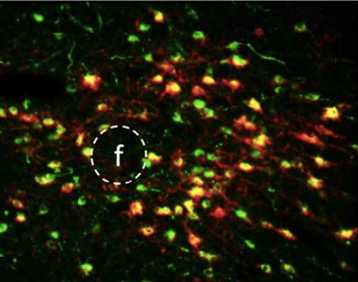

I study why sleep falls apart when people stop using drugs — and whether broken sleep is a cause of relapse or a symptom of the same thing that drives it.
Purpose
More than two-thirds of people who try to quit cocaine use again within a month. Almost all of them sleep badly while they try, and the worse they sleep, the more likely they are to relapse. The field has long read that as a chain of events: sleep breaks down, self-control weakens, relapse follows. Treat the insomnia and you protect the recovery.
Nobody had tested it. That is the question I came to Rutgers to answer, and the answer my data point toward is a different one — that the broken sleep and the pull back toward the drug are two outputs of a single overactive system in the brain, not a cause and its consequence.
It matters because it changes what you treat. There is no approved medication for cocaine use disorder. If the sleep loss and the relapse risk share an upstream driver, then a drug that reaches that driver should move both at once — and drugs that do are already sitting on pharmacy shelves, approved for insomnia. If instead sleep loss is the cause, any good sleeping pill would do. Those two accounts predict different clinics, and they are separable in the lab.
Research

Orexin is a signaling molecule made by a few thousand neurons in the hypothalamus. The same cells hold the brain awake and push animals toward things they want. Cocaine makes them more numerous and more active.
I ask whether that overactivity explains the fragmented sleep of early abstinence, the drug seeking, or both — using continuous sleep recording in rats, drugs that block orexin receptors, and genetic tools that switch off orexin neurons specifically while leaving the rest of the brain alone.
The same circuitry shapes how rewarding food feels. In a second line of work I study binge-like eating in female rats and how orexin signaling into the midbrain tracks the shift in what a reward is worth.
The aim is to find out how far the framework reaches: whether what holds for a drug also holds for food, and what that says about treating compulsive eating as a problem of reward signaling rather than appetite.
Ongoing and unpublished work is described here in outline only. Published papers are listed below and on Google Scholar.
On camera
Utsav Gyawali Shares Insights about SfN’s TPDASociety for Neuroscience · on what the Trainee Professional Development Award makes possible for early-career scientists presenting at SfN.
Growing Through Research Opportunity & Support at Rutgers BHIRutgers Brain Health Institute · on carrying this research to an international meeting in Spain, and why support for trainees is what makes that possible.
Recognition & coverage
Science writing
Alongside the bench work I write for the Brain Health Institute, translating neuroscience for patients, families, and scientists outside the field. The program this work belongs to, Brain Health Insights for You, won a Bronze Anthem Award in 2026.
Selected publications
Full list, including co-authored work from graduate training, on Google Scholar.